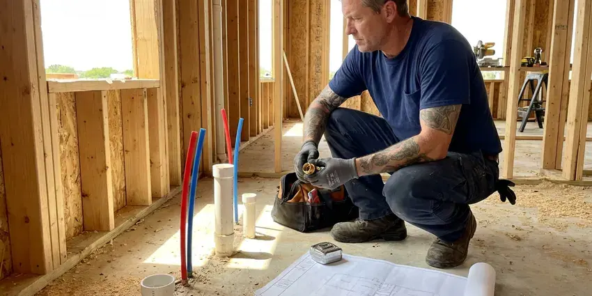

Drainage Services in Sunrise, FL
Need drainage work in Sunrise, FL? HDF Plumbing clears drains and repairs sewer lines for houses and shops.
- Same-Day Drain Service
- Yard & Storm Drainage
- Guaranteed Work
- Work Backed in Writing

Get Your Drains Moving in Sunrise, FL.
We take on the tough drain jobs, including root-filled sewers.
Drainage Repairs for Sunrise, FL Homes
HDF Plumbing gives Sunrise homeowners a plain explanation of what is wrong with the drain before any work starts. Pricing is written down first. If the camera shows a cracked or root-filled sewer, we show you the video, mark the spot with a locator, and explain whether spot repair, lining or replacement makes the most sense for that line.
Some of what we do:
- French drains, channel drains and pop-up outlets for yard runoff
- Snaking, jetting and camera work on indoor drains
- Downspout tie-ins, dry wells and grade corrections near foundations

Additional Plumbing Maintenance Services in Sunrise, FL
Our maintenance and specialty plumbing services in Sunrise, FL protect your home year-round and extend the life of every system.


Customers
Why Choose HDF Plumbing for Drainage Services in Sunrise, FL?
Every drain job ends with a flow test. Water runs through the cleared line for several minutes before we pack up. On yard systems, we run a hose into the catch basins and watch the outlet, because a French drain that looks fine on paper can still hold water if the outlet end sits too high.
- Right Equipment, Cable machines, jetters, cameras and locators let us fix the cause, not the symptom.
- Advanced Tools, Our trucks carry sewer cameras and jetters to find and clear the problem.
- Whole-Property View, We trace water from the roof and fixtures all the way to the street or a dry well.
Citywide Coverage
Rural properties outside Sunrise usually drain to a septic system. Septic lines need gentle care. We clear lines without pushing debris into the tank, and the camera can show baffle or field problems.
Experienced Team
Each HDF Plumbing plumber holds a license and trains on our jetters and cameras. We keep training. Jetting old cast iron or thin-wall clay takes judgment, because the wrong nozzle or too much pressure can do damage, so our technicians camera the pipe first and adjust the setup to what they see.
Safety-First Approach
Jetting and cable equipment stays in the hands of trained technicians. Chemical drain cleaners are a hazard for us. If you have poured a chemical cleaner into the drain, tell us before we start, because opening a trap full of lye or acid can burn skin and eyes, and we will flush it carefully before cabling.
Trusted Certified Sunrise Plumbing Services Professionals
At HDF Plumbing, we are proud to offer certified plumbing services throughout Sunrise, FL. Credentials matter in this trade. Our plumbers hold recognized industry credentials, and they follow strict safety and quality rules on every repair, installation and maintenance call we run.
Call Us Now PHCC Plumbing Contractor Recognition
PHCC Plumbing Contractor Recognition Better Business Bureau (BBB) Accreditation
Better Business Bureau (BBB) Accreditation Angi Certified Pro
Angi Certified Pro ISO 9001 Quality Management Certification
ISO 9001 Quality Management CertificationDrainage Services in Sunrise, FL
French Drain Installation in Sunrise
A French drain is a gravel-filled trench with perforated pipe that collects groundwater and carries it away. We wrap the gravel in filter fabric so silt does not clog it. The pipe needs at least a 1 percent slope to a daylight outlet, a dry well or a sump, and the outlet end needs a grate so animals do not nest in it.

Kitchen, Bath and Laundry Drain Clearing in Sunrise
Slow sinks, gurgling tubs and overflowing laundry standpipes usually come from grease, hair and lint. Water across much of Florida comes from limestone aquifers and runs hard, leaving heavy scale on fixtures and inside water heaters. Scale roughens the inside of old pipe so debris catches, and the same drain keeps clogging. A lint trap on the washer hose helps a lot.
Preventive Drain Maintenance in Sunrise, FL
Scheduled drain cleaning costs less than one emergency call. Maintenance plans suit root-prone sewers and old cast iron, and every visit includes a camera check. The footage gets saved. Comparing it year to year shows whether roots are growing back faster.
Drainage System Maintenance in Sunrise
Maintenance on a drain system costs less than one emergency visit. For homes with a history of root intrusion, we cut roots from the sewer every 12 to 18 months and camera the line so we can see if a section needs repair before it collapses. Yard drains get flushed too.
Outdoor & Storm Drain Cleaning in Sunrise
Area drains, catch basins and driveway trench drains fill with leaves and silt. Once the grate is buried, water sheets across the yard or into the garage instead of going down the drain, and the pipe below can pack solid with mud. Basins get cleaned out and the pipe gets jetted. Fall cleaning helps most.
Hydro Jet Line Cleaning in Sunrise
Jetting uses water at high pressure to strip a pipe back to its original diameter. Water across much of Florida comes from limestone aquifers and runs hard, leaving heavy scale on fixtures and inside water heaters. Scale and grease on the pipe wall catch debris, and stripping them off keeps the line clear far longer. Plan on about two hours.
Storm Drain and French Drain Installation in Sunrise, FL
Heavy downpours expose every low spot in a yard. After a major storm, homes on wells or septic should be checked before normal use, since floodwater can foul both systems. We install catch basins at the low points and run solid PVC to a legal outlet, sized so the pipe carries the water from a hard storm rather than backing up into the basin. Outlets need daylight or a dry well.

Restaurant and Industrial Drain Service in Sunrise
Restaurants and industrial buildings send heavier loads down their drains than homes do. Grease interceptors need pumping on a schedule. We jet kitchen lines between interceptor pumpings, clear floor sinks and trench drains, and keep a service log your health inspector can review if they ask about grease management.
Drainage Services Near Me in Sunrise, FL
Water backing up a drain or flooding a yard needs a crew that is already in town. We dispatch from close by. For storm flooding, we can pump out window wells or low spots, clear blocked catch basins, and then come back to plan a permanent drain once the ground dries enough to dig.
Searching for drainage services near me in Sunrise, FL tends to happen when water is already somewhere it should not be. We keep trucks nearby. That lets us clear a backed-up main the same day in most cases, and come back for a yard drainage site visit after the next rain so we can see exactly where the water runs.
HDF Plumbing at a Glance
- Licensed and insured plumbers serving Sunrise, FL
- 24/7 emergency service with same-day scheduling
- Upfront, flat-rate pricing before work begins
- 4.9-star rated by 739+ Florida customers
Sunrise Map
Sunrise Information
- Population
- 96,808
- Area codes
- 754/954/561
- Service area
- Sunrise and towns within a 40 mile drive
- Nearby
- Tamarac, Lauderhill, Margate, Davie
Drainage in Sunrise, FL needs to be sized for the big storms. After a major storm, homes on wells or septic should be checked before normal use, since floodwater can foul both systems. Pipe and drain sizes are picked with that in mind.
Expert Services
Call HDF Plumbing for reliable plumbing work done by licensed pros in Sunrise, FL.
Our Specialized Plumbing Services in Sunrise, FL
At HDF Plumbing, we handle the full list of plumbing services across Sunrise, FL. We go from leak detection all the way to full system installations, for homes and commercial buildings, and we do it quickly at a fair price. Take a look at our core services below:


How We Fix Drainage Problems in Sunrise, FL
Every drainage call follows the same steps, from first call to final flow test.
Request a Quote
Call (904) 925-7356 to book a drain visit. We confirm the time by text.
Diagnosis
A licensed plumber assesses the drain, often with a camera, and explains the fix.
Clear the Line
We snake or jet the line based on what we find, then test the flow.
Frequently Asked Questions About Drainage Services in Sunrise
Most basic drain clearing in Sunrise, FL runs $150 to $500. Main lines cost more than sinks. Jetting costs more than cabling, and sewer repairs run from a few thousand for a spot fix to much more for replacement.
Yes, runoff that pools against the house can stress the foundation over time. A high water table across much of Florida affects drainage, septic design, and how easily crews can dig for underground repairs. Moving roof water away and grading the soil to slope off the house takes most of that stress away. Downspouts are the cheapest fix.
We advise against it. Caustic cleaners can soften old PVC joints and eat at cast iron and metal traps. When they fail, the trap stays full of caustic liquid that the plumber has to deal with carefully.
We install and service Zoeller, Little Giant, Wayne and Liberty pumps. Cast iron housings hold up best. Battery backups with their own float and an alarm cover power outages and pump failures.
Sometimes. The answer depends on where you live. Certain areas require dry wells to be registered. Distance rules from buildings and septic fields are common, so we check your local rules first.
Our cable machines come from Spartan Tool and RIDGID, and our cameras are RIDGID SeeSnake units with built-in locators. Jetters are trailer or cart units. A locating camera pinpoints the problem, so a repair means one small hole, not a long trench.
We recommend skipping them. Harsh chemicals can damage older pipes. They rarely remove scale or roots, so the clog comes back, and if the cleaner sits in the trap when a plumber opens it, it can splash and burn, which is why we always ask before we start.
Drain clearing carries a service guarantee for a set period. Repeat clogs get a return visit. If the camera shows broken or root-filled pipe, we tell you the clearing is temporary.
What Our Customers Say About Our Plumbing Experts

Greg S.
I manage a small strip center with six tenants. HDF Plumbing handles our annual backflow testing and fixed a recurring clog in the shared sewer line that had been backing into the nail salon. Their reports come in clean and on time.
Commercial Plumbing · Margate, FL
Rachel N.
Hard water was leaving white crust on every faucet and our dishwasher was struggling. The tech tested the water, recommended a softener sized for a family of five, and installed it with a bypass valve in one afternoon. The spots on our glasses are gone.
Water Softener · Davie, FLLisa C.
Water was pouring out from under the washing machine on a holiday weekend. HDF Plumbing talked me through closing the valves over the phone and had a plumber at the house within ninety minutes. It was a burst fill hose.
Emergency Plumbing · Tamarac, FL
Diane F.
My kitchen faucet had dripped for months and I finally got tired of hearing it at night. HDF Plumbing came out the next morning, replaced the cartridge and the O rings, and tightened a loose base that was letting water under the sink.
Faucet Repair · Fort Lauderdale, FLMark T.
The floor drain in our office break room backed up every few weeks. The plumber ran a cable, then put a camera down and found roots at a joint about thirty feet out. Seeing it on the screen made the decision easy.
Drain Cleaning · Tamarac, FL
Monica A.
Our water bill nearly doubled in one month with no change in how we used water. The tech checked the meter, heard the leak under the hallway with his equipment, and opened a hole about a foot square. Fixed the same day.
Slab Leak Repair · Lauderhill, FL